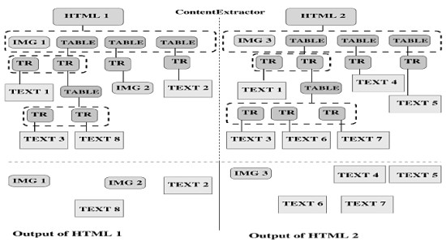
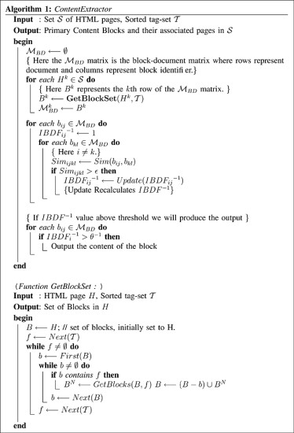
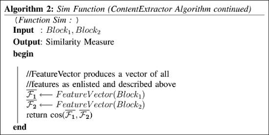

| Back: Future and Conclusions | Up: Index | Next: None |
|---|
| Image | Source |
|---|---|
| http://jolineblais.net/nmd343/character-web/ | |
|  | https://ieeexplore.ieee.org/abstract/document/1490530 |
|  | https://ieeexplore.ieee.org/abstract/document/1490530 |
|  | https://ieeexplore.ieee.org/abstract/document/1490530 |